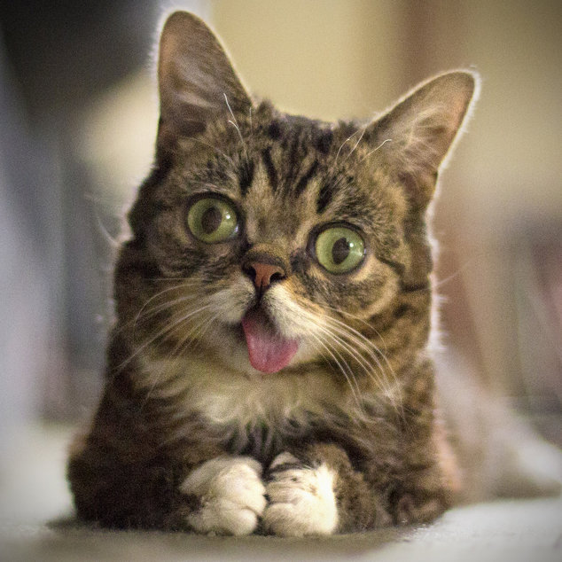

|

Нервовий стан у кішки видають вуха - вони у неї дрібно сіпаються, хоча сама кішка може спокійно сидіти і спостерігати. Можна навіть, чіпаючи кішку в такому стані, добитися від неї шипіння і удару лапою. При нападі когось коти щільно притискують вуха до голови. Це для оберігання від зубів і кігтів противника. Якщо кіт нападає сам, то вуха він опускає горизонтально і в сторони, утворюючи трикутник. Котячі бійки короткі, але дуже люті і жорстокі. Головна їхня зброя в бійках - зуби. |